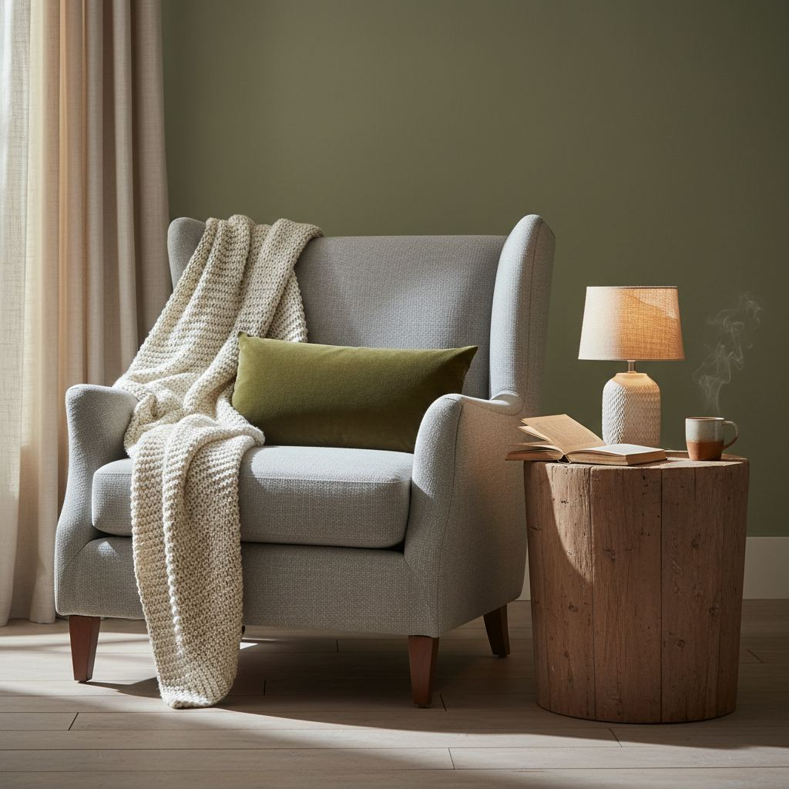

Fall Home Decor Guide: Warm Up the House Without Clutter

You almost never need to buy new decor to make a home feel like fall. What you need is to shift three things: color, texture, and light.
Shift the palette
Rotate in warmer accents you already own: rust, terracotta, ochre, deep green, warm brown. This can be as simple as swapping the throws and switching a few art prints.
Swap in warmer textures
Replace linen throws with wool or chunky-knit ones, cotton cushion covers with velvet or bouclé, and light rugs with a warmer wool. Even one texture swap in the living room changes the whole room.
Layer scent and light
Warm-scented candles (cinnamon, cardamom, wood smoke) and lower, warmer lighting complete the shift. Dim overheads, turn on lamps, add candles at dinner.

Cultivate Cozy Corners
Rather than attempting a full home overhaul, identify specific areas that can be transformed into inviting nooks for cooler evenings. Think of a reading corner, a window perch, or a neglected armchair. The key here is intentionality, not excess. Start by clearing out any extraneous items. For a reading nook, this might mean removing stacks of old magazines or decorative items that don’t serve a purpose. Introduce a small, plush throw — a faux mohair blanket in rust or a chunky knit wool throw in cream, sized about 50"x60" – draped casually over the back of a chair. Add a single, substantial throw pillow, perhaps a velvet lumbar pillow in deep olive (approx. 14"x22"), for added comfort and a touch of luxury. The goal is to make these spaces feel like a deliberate invitation to relax, not just a collection of soft goods.
Lighting is paramount for defining these zones. A small task lamp or a strategically placed floor lamp with a warm-toned bulb (2700K) can make all the difference. Consider a ceramic table lamp with a cream linen shade on a nearby side table (a good option is one with a 10-12 inch base diameter, standing about 20 inches tall). A soft glow delineates the space and instantly makes it feel more intimate. For a budget-friendly option, a string of battery-operated fairy lights artfully arranged in a clear glass hurricane vase or around a bookshelf can also provide a surprisingly cozy ambient light. Avoid overhead, stark lighting which negates the cozy effect.
Incorporate Natural Elements
Bringing the outdoors in is a timeless fall decorating strategy, but we can move beyond the ubiquitous basic pumpkin. Focus on organic textures and muted tones. Consider a carefully composed tablescape for an entryway console or dining table. Gather a collection of dried hydrangeas in muted greens and faded blues, or a bundle of wheat stalks tied with twine (look for bundles approximately 18-24 inches tall, costing around $10-15). Place these in a ceramic vase with an unglazed finish, emphasizing the tactile quality. Avoid overly shiny or ornate vessels that detract from the natural beauty.
- Mistake to avoid: Over-arranging. Natural elements should feel effortless, not stiff. Allow some pieces to slightly spill or lean.
- Consider small, potted plants with interesting foliage. A 'Black Rose' succulent or a small 'Autumn Fern' in a terracotta pot adds a living, breathable element without demanding constant attention, especially if your light conditions aren't ideal.
- For larger statements, a substantial branch of colorful fall leaves (maple or oak) can be placed vertically in a tall, slender floor vase. Ensure it's stable and won't tip. These can be collected from your yard or purchased from floral suppliers for approximately $20-30 for a good-sized piece around 3-4 feet tall.
For a subtle botanical touch, integrate botanical prints or pressed leaf art. Look for framed prints (around 11x14 inches) featuring oak leaves, acorns, or mushroom species in muted color palettes. These provide visual interest without adding physical clutter. A set of three coordinating prints can often be found for under $50 and work well above a sideboard or in a hallway.
Elevate Your Entryway
The entryway is your home’s first impression, even if it's a compact space. Elevate it for fall with thoughtful, functional decor. Start by replacing your front doormat with one that signals the season — a natural coir mat with a subtle pumpkin motif or a simple 'hello' in warm tones works well (standard size 18"x30" or 24"x36", budget around $20-40). For a more sophisticated look, layer a smaller, patterned rug (think plaid or a muted geometric) on top of a larger, plain jute or sisal rug. This adds depth and visual interest without overwhelming the space.
Step-by-Step Entryway Refresh:
- Clear clutter: Remove keys, mail, and shoes that accumulate. A small basket or tray on a console table can corral essentials.
- Add a seasonal scent: A small reed diffuser with notes of spiced apple or cedarwood near the door (placed out of high-traffic areas).
- Introduce a focal point: A single, large ceramic pumpkin (about 8-10 inches diameter) in a matte finish, or a substantial vase filled with dried grasses or pampas plumes (around 24-30 inches tall) on a console table.
- Consider a functional upgrade: If space allows, a bench with under-seat storage can be an excellent addition, providing a spot for removing shoes and discreetly tucking away gloves or scarves. Look for one approximately 36-48 inches wide with a depth of 14-16 inches.
For the wall, swap out any bright summer artwork for a framed botanical print or a landscape photograph depicting autumn scenes. If you have a mirror, consider adorning it with a simple, sparse garland of faux eucalyptus or delicate fall leaves. The aim is welcoming elegance, not a harvest festival explosion.
Thoughtful Table Settings
Even if you're not hosting a formal dinner, a thoughtfully set table or console can dramatically enhance your home's fall ambiance. This doesn't mean pulling out the fine china daily, but rather creating a visually appealing and organized surface. Start with a plain linen tablecloth in an autumnal hue like terracotta, sage green, or deep cream. A tablecloth measuring 60"x90" typically fits a standard dining table for 6-8 people. Avoid overly busy patterns to maintain a sense of calm.
Layering is key for an interesting tablescape. Place a simple runner (14"x72") made of natural flax or a loose-weave cotton down the center. For everyday, a simple centerpiece can consist of three small bud vases (around 4-6 inches tall) with single stems of dried bunny tail grass or sprigs of seasonal berries. Alternatively, a low, wide wooden bowl filled with various gourds and mini pumpkins (choose those with interesting textures or muted colors: white 'Baby Boo,' green 'Jack Be Little,' or striped 'Sweet Dumpling') creates an instant festive feel without being over-the-top. Ensure your centerpiece is low enough (under 12 inches) for easy conversation.
- Material consideration: For placemats, consider woven seagrass, felt, or even simple round cork placemats for textured contrast (approx. 15 inches diameter).
- Candle Placement: Incorporate unscented pillar candles in varying heights (3-inch, 6-inch, 9-inch) set on a ceramic tray or wooden coaster for safety. The soft glow adds warmth without competing with other scents.
- Avoid: Overly large serving dishes or items that aren't regularly used being left out on the table; this quickly leads to visual clutter.
For individual place settings, consider using your everyday dishes but add a cloth napkin in a complementary fall color, tied simply with a piece of twine or a small, fresh sprig of rosemary. This small detail elevates the everyday without requiring a full china cabinet overhaul. This approach translates well to coffee tables or sideboards as well – a simple tray with a few curated items can make a big impact.
Curated Bookcase Styling
Bookcases often become dumping grounds for miscellaneous items, but they present a prime opportunity for seasonal styling without adding clutter. The principle here is curation, not accumulation. Start by removing everything from one or two shelves at a time. Dust thoroughly. Re-introduce books, but consider arranging some horizontally in small stacks (2-3 books) to break up the vertical rhythm. Intermix books with small, meaningful decorative objects.
Styling Elements for Fall Bookcases:
- Ceramics: A small, handmade ceramic bowl or a bud vase in an earthy tone (e.g., rust, dark green, cream). Look for pieces around 4-6 inches in height or diameter.
- Natural textures: A cluster of three small pinecones, an interesting rock, or a small piece of driftwood. These add organic appeal and texture.
- Art: Lean a small framed print (5x7 or 8x10 inches) against the back of the bookshelf, perhaps a botanical illustration or an abstract piece with warm colors.
- Seasonal accents: A single, very small mercury glass pumpkin or a ceramic acorn. Resist the urge to add many; one or two well-placed items are sufficient.
- Greenery: A small trailing vine in a simple pot, such as a Pothos or Philodendron, can soften the hard lines of books and shelves. Look for 4-inch nursery pots.
Color coordination can also be subtly introduced. If you have books with particularly vibrant spines that clash with your fall palette, consider turning them spine-in for a more cohesive, neutral look, or grouping them by color. The goal is to create vignettes on each shelf that tell a small story or showcase cherished objects, rather than just filling empty space. Rotate these pieces throughout the seasons to keep the look fresh and engaging without purchasing new items every year. This method transforms a functional storage unit into a decorative focal point.
Key takeaways
- Shift color, texture, and light, not the whole room.
- One texture swap per room is enough.
- Dim overheads, add lamps and candles.
Frequently asked questions
Do I need to buy pumpkins?
Only if you enjoy them. A single well-placed decorative pumpkin reads as intentional; a truckload starts to feel like a display.

Sophia Bennett is a certified interior stylist and the senior editor at Styleire. She has spent more than eight years helping homeowners and renters create warm, functional interiors, with hands-on experience across small city apartments and family homes. Her work has been informed by close collaboration with independent designers, craftspeople, and product testers.
View full profile →Related reading

Cozy Bedroom Ideas: 12 Changes That Actually Make a Difference
Cozy is a feeling built from small, specific choices. Here are the twelve that make the biggest difference.